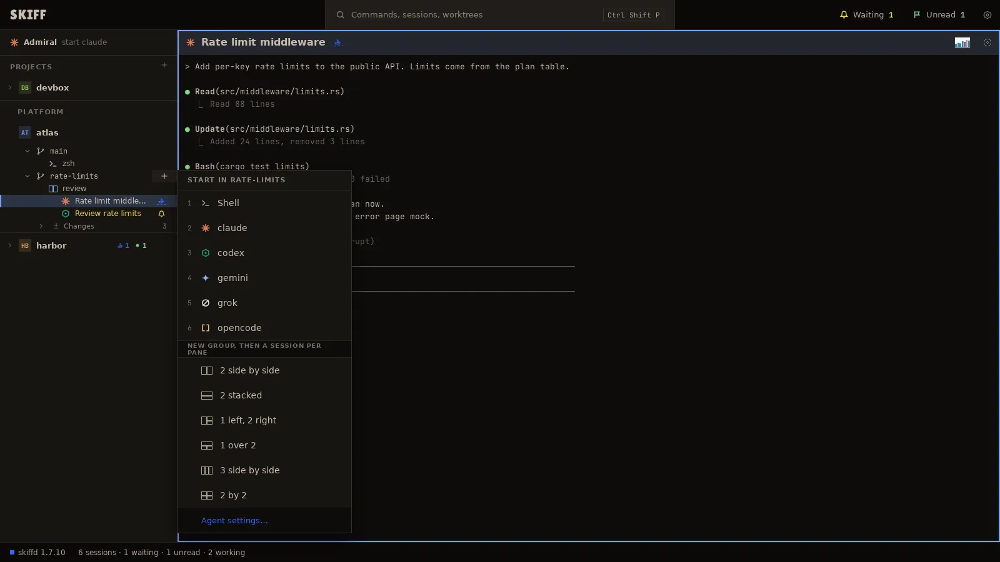
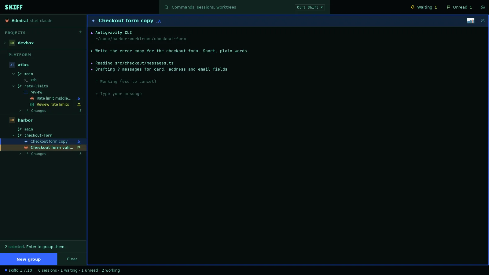
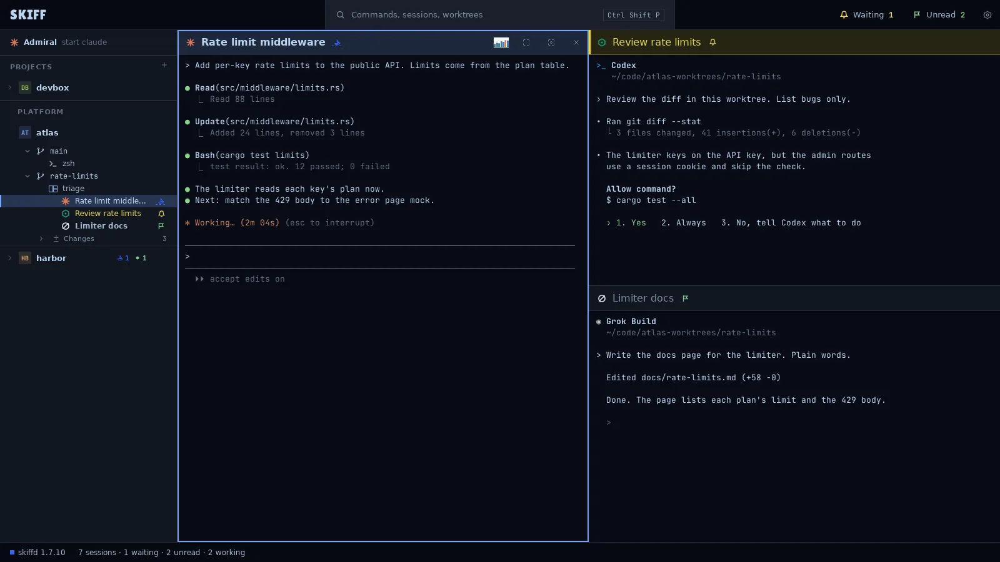
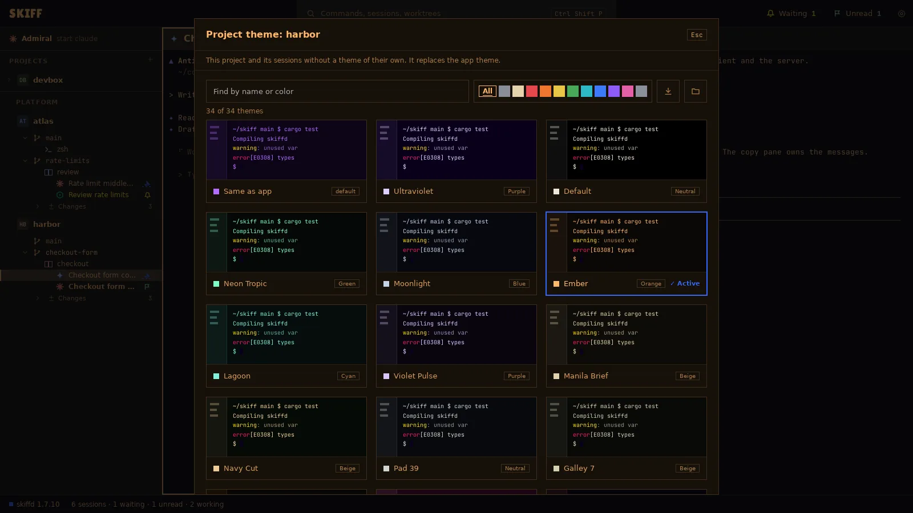

Skiff
SkiffSessions, groups, tiles and themes
A session is one agent or shell in a worktree. The daemon, skiffd, owns it, so it keeps running when you close the window. A group puts up to four sessions side by side in one layout. Themes tell the projects and sessions apart.
Create sessions
- Point at a worktree row in the side panel and click its +. Or make the row current and press Ctrl+Shift+T.
- The menu reads START IN and the branch. Click Shell or an agent, or press its digit.
- The session starts in the worktree and its pane fills the main area. Its row goes under the worktree, with the agent's icon and a name.
- A project with only its main checkout has no worktree row. Its project menu lists the same choices under START IN MAIN.

| Ctrl+Shift+R | Rename the session. The name shows on its row and pane header. |
| Ctrl+Shift+K | End the session. Skiff asks first. The pane's menu has End session… too. |
| Ctrl+Shift+J | Go to the next session that waits for approval. The top bar counts them under Waiting and Unread. |
| Ctrl+Shift+B | Back to the last session. |
| Ctrl+Shift+P | The palette: every command, session and worktree by name. |
A bell on a row means the agent waits for you. A flag means it finished a turn while you were elsewhere. Skiff reads both from the agent's screen. It installs nothing in the agent.
Create groups
- Open the worktree's launch menu. Under NEW GROUP, THEN A SESSION PER PANE, click a layout: 2 side by side, 2 stacked, 1 left, 2 right, 1 over 2, 3 side by side or 2 by 2.
- The group opens with empty panes. Each empty pane offers the same start choices. Pick one for each pane.
- Or split from a pane: right-click it and click Add pane right… (Ctrl+Shift+D) or Add pane below… (Ctrl+Shift+S). Pick a shell or an agent. The new session starts in the same worktree, and the two panes become a group.
- The group gets a row in the side panel with the names of its sessions under it. Click the row to show the group. Right-click it to Rename, set a Group theme…, Ungroup, or Kill all sessions….
Group sessions
Sessions that already run can join a group.
- Hold Ctrl (⌘ on macOS) and click the session rows. A bar at the bottom of the side panel counts them.
- Click New group, or press Enter. The sessions open side by side as one group. When one of them is a whole group, the button reads Add to and the group's name, and the others join it.
- Hold Shift and click to select every row between two rows.
- Or drag. Drop a session row on another session to make a group of the two. Drop it on a group row to join that group. Drop it on a row of its own group to trade places. Drop it on the worktree row to leave the group.
- To take one session out, click the × at the right of its pane header, or press Ctrl+Shift+W. The session keeps running.

Tile sessions
- A group holds up to four panes. Drag the line between two panes to change their sizes.
- Drag a pane by its header onto an edge of another pane to move it there. The target lights up before you drop.
- Move the keys between panes with Ctrl+Shift+Alt+Left, Right, Up or Down, or click a pane. The focused pane has a frame in its project's color.
- The buttons at the right of a pane header maximize the pane, enter focus mode, and take the session out of the group. See chapter 5.

Theme projects and sessions
Themes cascade: the app theme, then a project theme, then a session theme. A lower level replaces the one above it. Skiff ships 34 themes.
- For a project: open the project menu, click Appearance, then Project theme…. Or press Ctrl+Shift+X with the project row current. The side panel, the top bar and every pane of the project without a theme of its own take it.
- For a session: right-click its pane or its row and click Session theme…, or press Ctrl+Shift+X on the row. Only that pane changes.
- For a group: right-click the group row and click Group theme…. Every session in the group takes it.
- In the picker, type a name or a color in the search field, or click a color swatch. Click a card to apply it and close. The first card, Same as app or Same as project, removes the theme at this level.
- The app theme is in Settings › Appearance. See chapter 9.

The same Appearance menu sets the project's Color… (Ctrl+Shift+I), its Initials…, an icon file, and a background image behind its panes.